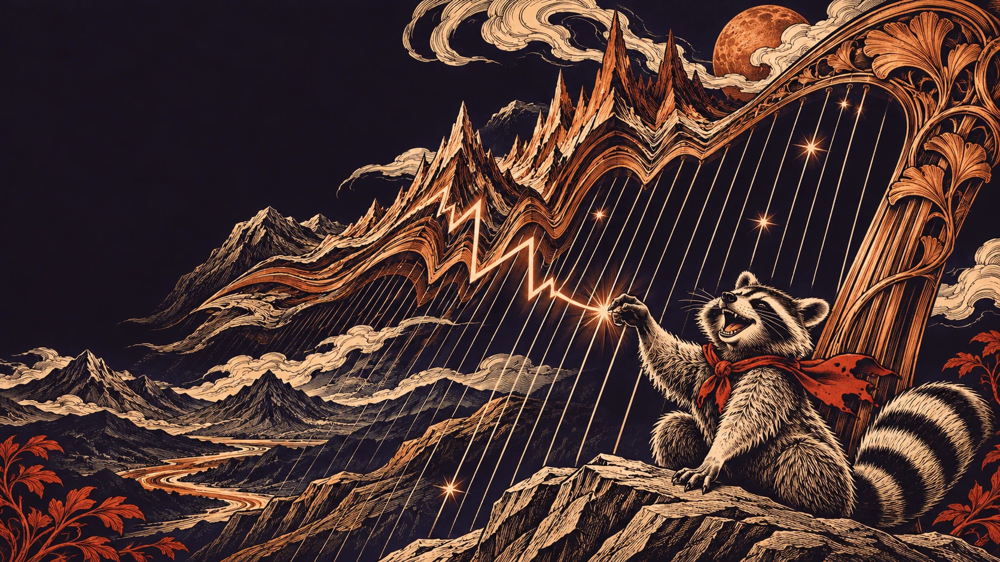

Melkor Linux
O guaxinim altera a canção da criação. Das cordas da harpa nascem as montanhas.
Uma distribuição Linux pessoal para PCs x86-64, com instalação UEFI e atualizações assinadas.
O guaxinim altera a canção da criação. Das cordas da harpa nascem as montanhas.
Uma distribuição Linux pessoal para PCs x86-64, com instalação UEFI e atualizações assinadas.
